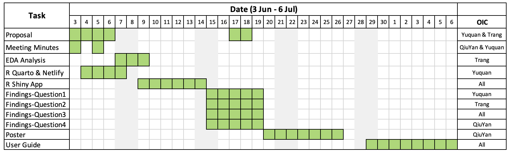

Project Proposal
Motivation
This project seeks to uncover hidden influence and illicit activity within the Oceanus community, where tensions are rising following a government crackdown on illegal fishing. As the local economy shifts toward ocean tourism, new entanglements have emerged involving celebrities, local officials, conservation groups, and powerful business families.
To investigate these developments, journalist Clepper Jessen compiled a comprehensive knowledge graph using two weeks of intercepted radio communications. However, the complex web of relationships and time-sensitive interactions surpasses the capabilities of traditional analysis. This project leverages visual analytics to support Clepper in identifying key events, uncovering hidden communication patterns, mapping influential entities, and exposing potential misconduct — ultimately revealing the deeper truths behind corruption and manipulation in Oceanus.
Objectives
This project aims to develop an interactive visual analytics tool to support Clepper’s investigation by uncovering hidden insights within the communication network. The specific objectives are:
Identify Temporal Communication Patterns: Analyze peaks and fluctuations in communication activity over the two-week period.
Explore Community Structure: Detect and visualize tightly connected groups of individuals and vessels. Interpret the dominant communication topics associated with each cluster to understand their purpose and affiliations.
Investigate a Suspicious Individual: Focus on the suspect, Nadia Conti. By examining her ego network, behavioral patterns, and communication methods, visually assess signs of suspicious activity and help validate Clepper’s investigative leads.
Data
This project utilizes the dataset from the VAST Challenge 2025 Mini-Challenge 3, which consists of two main files: MC3_graph.json and MC3_schema.json.
The MC3_graph.json file contains the radio communication knowledge graph, comprising 1,159 nodes and 3,226 edges. The nodes are organized into three main categories: Entity, Event, and Relationship.
The accompanying MC3_schema.json file serves as a reference dictionary to support data parsing and preprocessing. It defines the structure and subtypes for each node category—Entity, Event, and Relationship—and provides a detailed list of edge subtypes. Each edge type includes metadata such as description, is_inferred, and associated node types, enabling a deeper understanding of the graph’s structure and semantics.
Node Attributes
| Entity Subtypes | Event Subtypes | Relationship Subtypes |
|---|---|---|
| Person | Monitoring | AccessPermission |
| Organization | Assessment | Operates |
| Vessel | VesselMovement | Colleagues |
| Group | Enforcement | Suspicious |
| Location | TourActivity | Reports |
| Collaborate | Jurisdiction | |
| TransponderPing | Unfriendly | |
| HarborReport | Friends | |
| Criticize |
Edge Attributes
| Source Node | Entity | Event | Relationship |
|---|---|---|---|
| Entity | — | Entity initiates or participates in an Event | Entity is a source of Relationship |
| Event | Event targets or involves an Entity | Communication Event providing evidence for an Event | Communication Event providing evidence for a Relationship |
| Relationship | Entity is the target of a relationship | — | — |
Methodology
| Step | Description | Outcome |
|---|---|---|
|
Clean and standardize node and edge data, remove duplicates and invalid links, ensure consistent formatting. | Establish a reliable base for analysis. |
|
Visualize daily and hourly communication patterns using line charts, heatmaps, and density plots. | Identify spikes in activity and communication patterns across the two-week period. |
|
Construct interactive graphs showing relationships and communication interactions among entities. | Reveal influential entities and key actors through centrality metrics and co-occurrence patterns. |
|
Apply Louvain method to identify tightly connected groups. | Detect clusters and their themes. |
|
Build a focused ego network and analyzed her communication and control patterns. Develop a chronological view of Nadia’s activities. |
Confirm her central role in orchestrating illicit activities. and validate investigative leads. |
Storyboard
| Tab/Screen | Title | Key features/components | User Actions |
|---|---|---|---|
| 1 | Overview |
|
|
| 2 | Temporal Communication Analysis |
|
|
| 3 | Network explorer |
|
|
| 4 | Community Clusters |
|
|
| 5 | Activity Timeline |
|
|
R Packages
| Category | Key Packages |
|---|---|
| Data Wrangling | tidyverse, dplyr, jsonlite, lubridate, stringr, SmartEDA |
| Network Analysis | tidygraph, igraph, visNetwork, ggraph, widyr |
| Visualization | ggplot2, patchwork, ggrepel, ggridges, ggforce, scales |
| Interactive Elements | plotly, timevis, ggiraph |
| Shiny App Development | shiny, shinydashboard, DT, shinyWidgets, shinyjs |
Project Schedule
